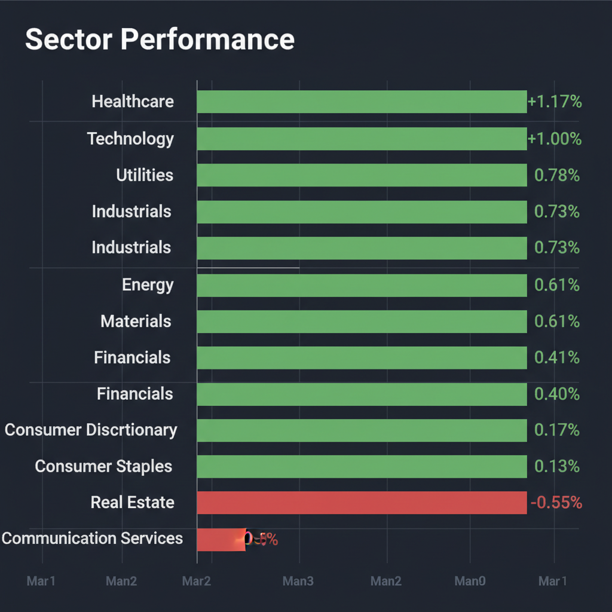
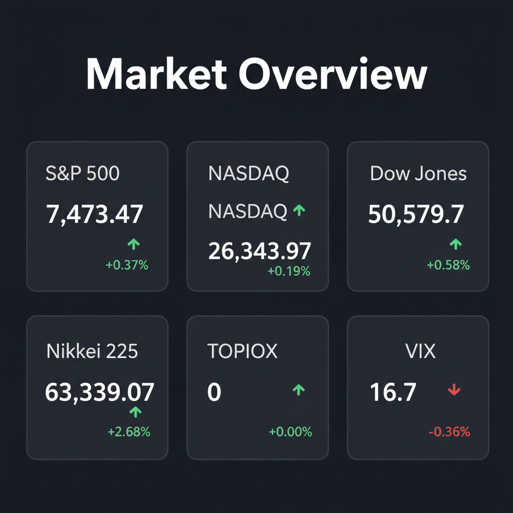

Daily Investment Report - 2026-05-23
Generated: 2026/5/23 7:31:18


投資チームの各専門家による分析を統合した、本日の最終投資レポートをお届けします。
1. エグゼクティブサマリー
- 日米の株価指数が最高値を更新する強気相場の中、VIXは低水準に留まっており、極めて低コストで下落リスクへのヘッジを構築する絶好の機会となっています。
- 市場は巨大IPOによる流動性枯渇や、金利高止まりに伴うマージン圧迫・信用収縮の足音を抱えており、熱狂の裏に隠れた転換点（相場の天井）に警戒が必要です。
- 今後は過熱した大型ハイテク株から利益を確保し、強固なキャッシュフローを創出する中小型バリュー株やディフェンシブセクターへ資金をシフトさせる戦略を強く推奨します。
2. 注目銘柄リスト
強気（買い推奨）
- Dorian LPG (LPG) [$1.5B - $2B]: 強固な好決算と潤沢な営業キャッシュフロー、1桁台の低PERを誇り、金利上昇局面で輝く下値リスクの限定的な中小型バリュー株です。
- Samsara (IOT) [中型株]: トラック運行や建設現場など「泥臭い現場のAI」として実体経済のDXを独占しつつあり、目標株価維持と高い売上成長率が期待される隠れたテンバガー候補です。
- Hadron Energy (HDRN) [小型株]: SPAC統合を経て新たに上場する次世代エネルギー関連で、機関投資家のカバレッジが手薄な今こそ、巨大なインフラ需要を取り込む成長余力に賭ける価値があります。
中立（様子見）
- Lantheus Holdings (LNTH) [$5B - $6B]: 安定したキャッシュフローを持つ優良な画像診断薬メーカーでM&A観測により急騰していますが、買収破談リスクを考慮し、現在のバリュエーション精査が不可欠です。
- ニデック (6594) [大型寄りの中型株]: 不採算のEV用事業からの撤退協議は中長期的な収益改善に寄与しますが、短期的な巨額減損リスクとPBRの底値を見極めるまでは待つべきです。
弱気（警戒）
- Arm (ARM) [大型株]: 週間で約50%急伸し、バリュエーションがファンダメンタルズを完全に無視した危険な過熱水準（パラボリック上昇）に達しているため、新規エントリーは手出し無用です。
- ウォルト・ディズニー (DIS) [大型株]: 映画の興行収入がフランチャイズ史上最低を記録するなど構造的な収益悪化に直面しており、テクニカル的にも下降トレンドの継続が強く示唆されています。
3. セクター推奨ランキング
景気後退懸念に強いディフェンシブ性を持ちながら、個別銘柄のM&Aが活発化しており、アルファ（超過収益）を狙いやすい最も有望な資金の避難先です。
中東の地政学リスクに対するインフレヘッジとして機能し、AIデータセンターの普及に伴う莫大な電力需要やインフラ不足の恩恵を直接享受します。
債券市場からの資金移動が活発であり、金利高止まりの恩恵を受けやすいものの、実体経済の減速に伴う信用リスクには一定の警戒が必要です。
資金の選別が始まっており、期待先行のAI銘柄やモメンタム過熱銘柄は避け、実用的なエッジAIや圧倒的な価格支配力を持つインフラ企業にのみ限定すべきです。
インフレによる消費者の娯楽支出減退と、構造的なコスト増（労働力等）の直撃を受けており、利益成長が見込みにくいため最も回避すべきセクターです。
4. 今週の注目イベント
- 5月26日予定：Hadron Energy（HDRN）のナスダック取引開始（SPAC統合完了）
- 5月28日予定：Mission ProduceとCalavo Growersの合併完了
- 6月12日予定：SpaceXの巨大IPO（市場の流動性吸収リスクのベンチマークとして注視）
- 来週（日付未定）：デル（DELL）の四半期決算発表
- 来週（日付未定）：サムサラ（IOT）の四半期決算発表
5. リスク要因
- 巨大IPOによる流動性ショック: SpaceXなどの歴史的規模のIPOが市場の資金を大きく吸い上げ、株式市場全体のバリュエーション収縮（相場の天井）を強制するリスク。
- インフレ粘着性とマージン崩壊: 労働力や燃料等のコスト高止まりを価格転嫁できない企業において、利益率が急悪化し、割安に見えても実は割高となるバリュートラップの危険性。
- 信用収縮とデフォルト連鎖: 国債利回りが急上昇する中、利回りを求めてハイイールド（ジャンク）債へ流入した資金が、景気減速を機にパニック売りを誘発するリスク。
- ハイテク株のパラボリック崩壊: ファンダメンタルズを無視して急騰したモメンタム銘柄が、AIへの「完璧な成長シナリオ」がわずかに剥落しただけで連鎖的に暴落するテールリスク。
6. アクションアイテム
- オプション市場を活用したヘッジの構築: VIXが16.7と極めて低い今のうちに、ポートフォリオの2〜3%を使って指数プット・オプション等を購入し、安価に下値保護（プロテクション）を確保してください。
- キャッシュ（現金）比率の戦略的引き上げ: 来たるべき流動性ショックやボラティリティの急拡大に備え、ポートフォリオの現金または短期国債の比率を直ちに20〜30%へ引き上げてください。
- モメンタム株の利益確定とストップロス設定: 買われすぎ水準にあるテクノロジー銘柄の新規買いは控え、保有分には20日移動平均線等を用いた厳格なトレーリングストップ（損切りライン）を設定してください。
- 中小型バリューと実用AIへの資金ローテーション: 将来の夢だけで買われている赤字グロース株を売却し、LPGのような確かなキャッシュフローを生む海運株や、Samsaraのような現場のDXを支えるBtoBの実用AI企業へ資金を移動させてください。